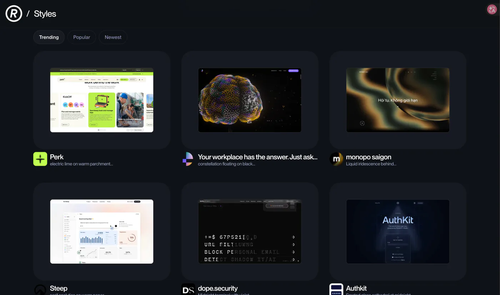
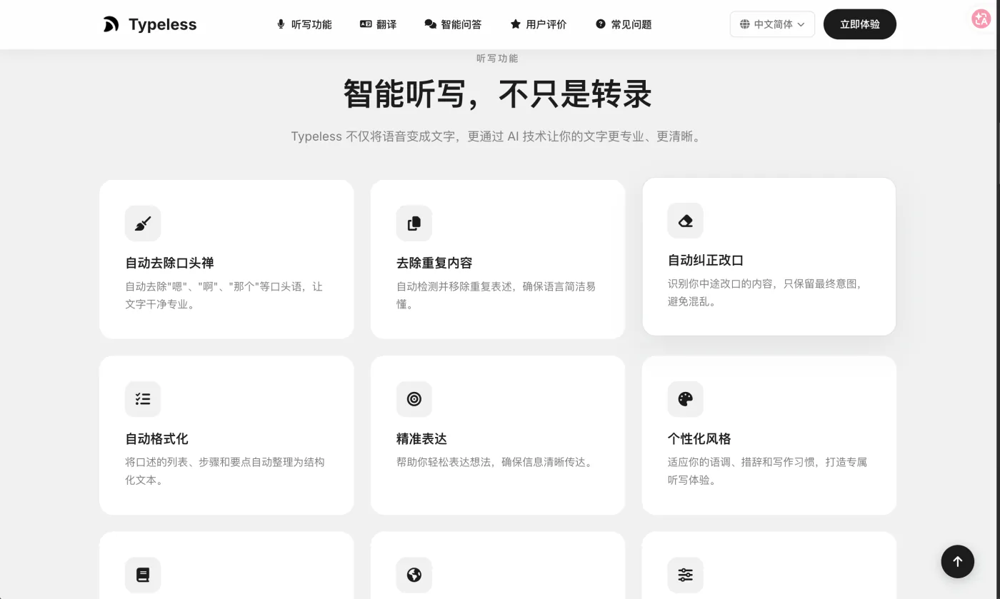
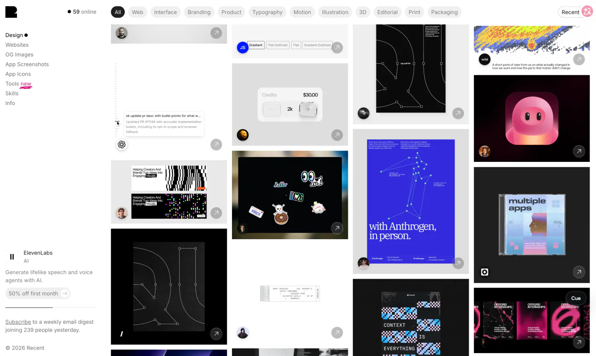
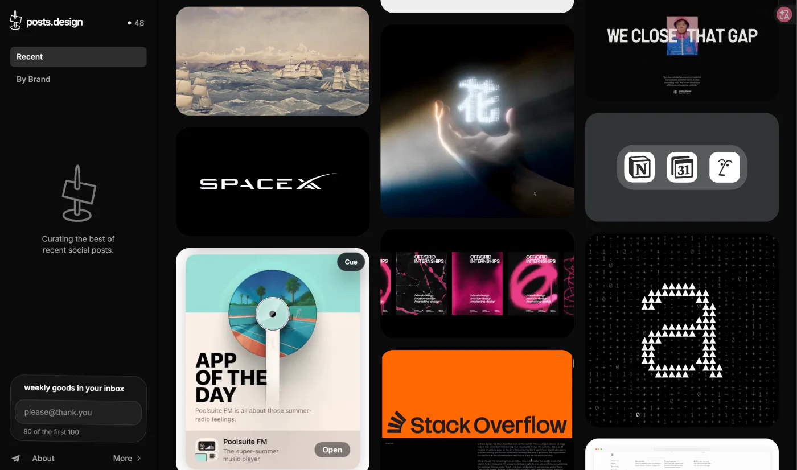
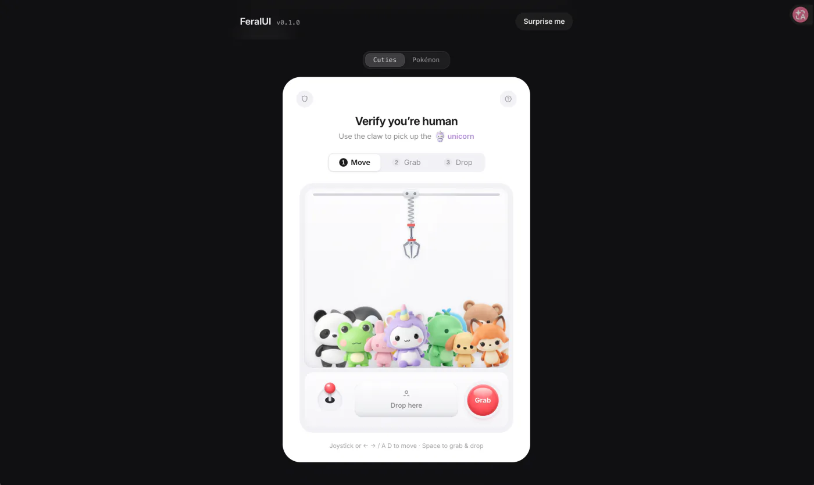
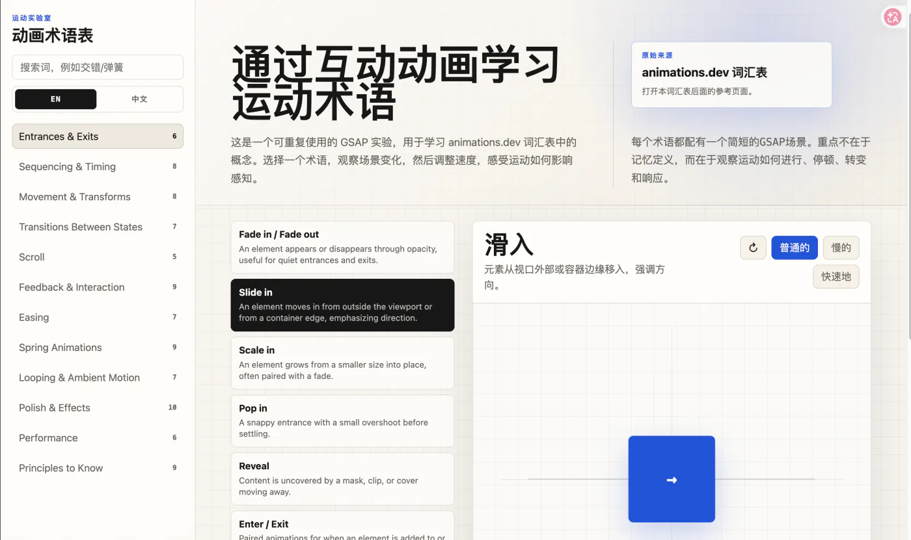
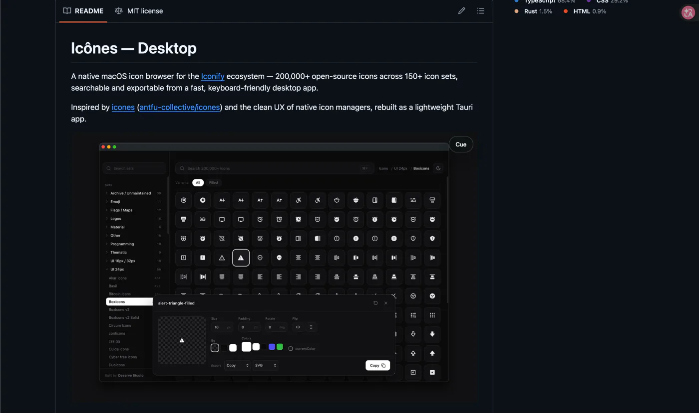
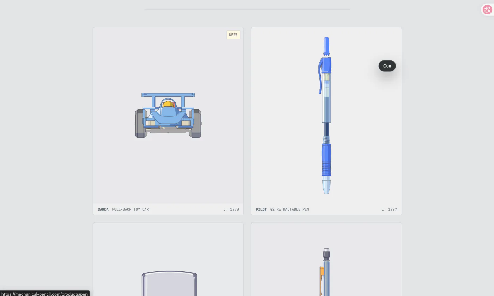
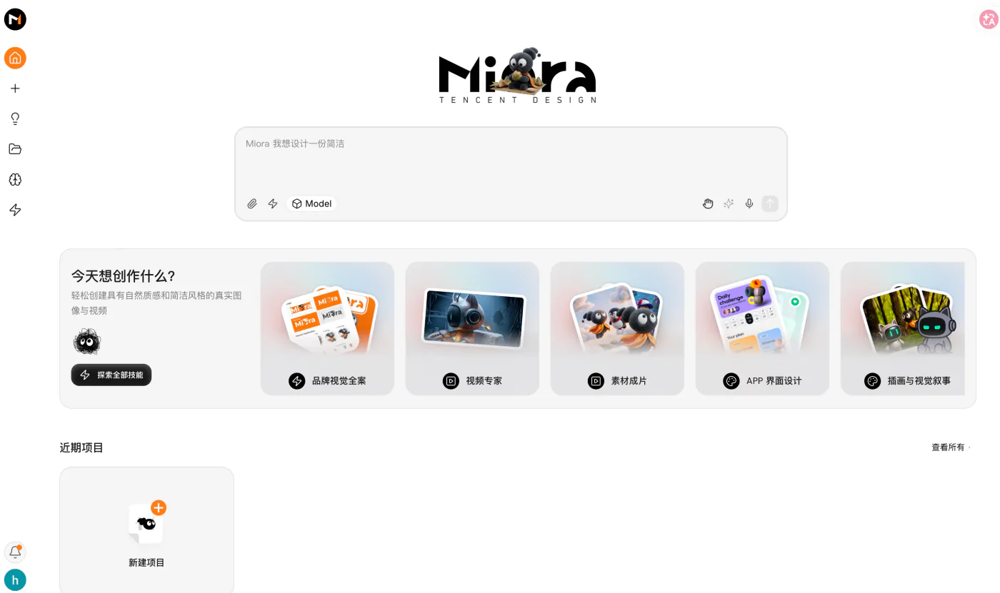
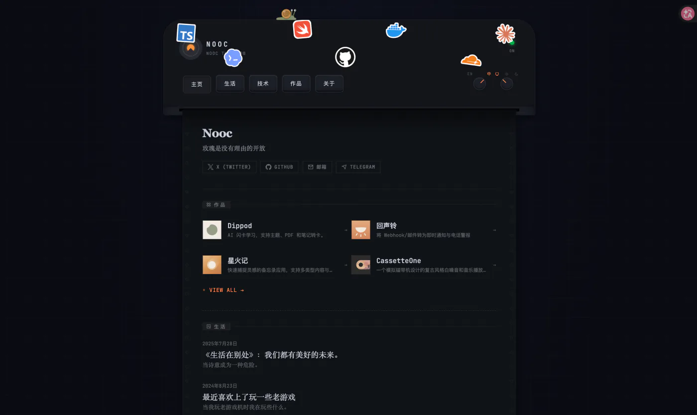

01让 AI 也能拥有「设计感」
DESIGN.md 把颜色、字体、间距与组件规范整理成 AI 可读的设计文档。先交付设计规范，再生成界面，结果会更接近真实产品。
DESIGN.md turns a visual system into AI-readable rules, helping generated interfaces feel less generic and more like a real product.
Read the source ↗第 001 期 · 2026 年 7 月 10 日
每周十条真正值得打开的设计资讯。
中文编辑导读，直接抵达原始来源。
本期主题
从 AI 可读的设计规范、语音输入，到趣味化的人机验证与机械动效：第一期收录十个能直接启发日常创作的工具、案例与灵感来源。

01DESIGN.md 把颜色、字体、间距与组件规范整理成 AI 可读的设计文档。先交付设计规范，再生成界面，结果会更接近真实产品。
DESIGN.md turns a visual system into AI-readable rules, helping generated interfaces feel less generic and more like a real product.
Read the source ↗
02自然说话，Typeless 会把语音实时整理成经过润色的消息、邮件与文档；速度比打字快 4 倍。
Typeless turns natural speech into polished messages, emails, and documents—in real time and up to four times faster than typing.
Read the source ↗
03精选来自 X 的创意网站、应用、图标、设计工具与新奇点子，是快速补充视觉输入的灵感库。
A focused stream of standout design work from X: websites, apps, icons, tools, and sharp creative references.
Read the source ↗
04把全网热门模板与设计帖子聚合在一起，并保持每日更新；适合把零散收藏变成可浏览的灵感面板。
A daily-updated home for popular templates and design posts, turning scattered saves into a browsable reference board.
Read the source ↗
05它把令人厌烦的人机验证做成抓娃娃：注意力从「被机器审查」转为「抓住独角兽」，把阻力变成了趣味。
A claw-machine CAPTCHA recasts a frustrating check as a tiny game, replacing resistance with the urge to catch a unicorn.
Read the source ↗
06用 GSAP 把常见动效词汇变成可点击的视觉演示，让设计师与开发在讨论动效时有一套更直观的共同语言。
A visual, clickable motion vocabulary built with GSAP—useful for giving designers and developers a shared language for movement.
Read the source ↗
07超过 20 万个开源图标被装进原生 Mac 客户端，搜索、预览与导出都可以在桌面上完成，免费且开源。
A free, open-source Mac app for searching, previewing, and exporting more than 200,000 open-source icons.
Read the source ↗
08对生活物品的内部结构做精细拆解，动态插画与剖析动画都很出色，是研究物理动效与插画表达的好材料。
Beautifully dissected everyday mechanisms, with motion and illustration worth studying for physical animation and visual storytelling.
Read the source ↗
09由 Agent 驱动的 AI 创意工作室：从 brief 出发，按需调用图像、脚本、分镜、视频、UI/UX、3D 与品牌等专家，在无限画布上交付完整创意资产。
An agent-powered creative studio that assembles specialists across image, script, storyboards, video, UI/UX, 3D, and brand work on one infinite canvas.
Read the source ↗
10很有质感的个人主页，头部像一台打印机。AI 正让从网站设计到上线变得更轻，值得把它当作个人项目的启动灵感。
A tactile personal site with a printer-like hero. A lovely reminder that AI has made taking a personal web idea live much more approachable.
Read the source ↗下期见
每周一份编辑型设计索引。十个值得打开的链接。
订阅系统正在准备中，敬请期待。